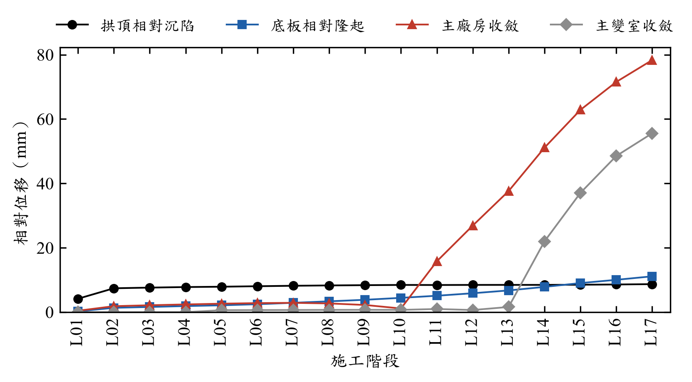
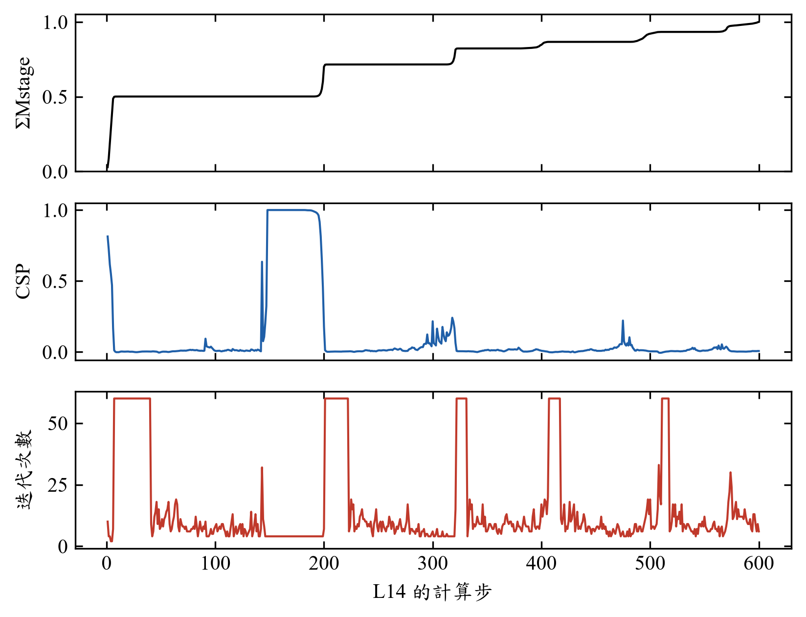
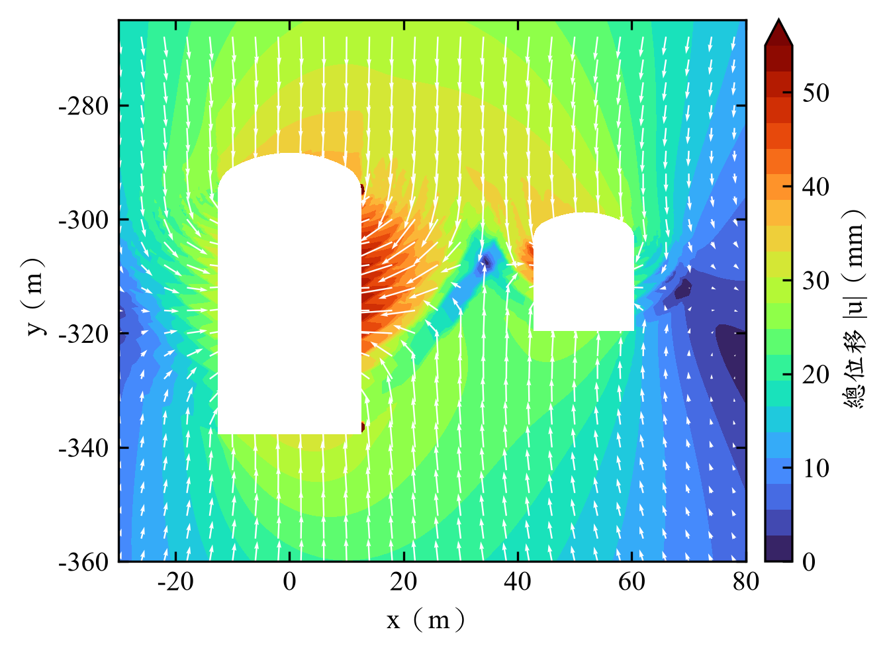
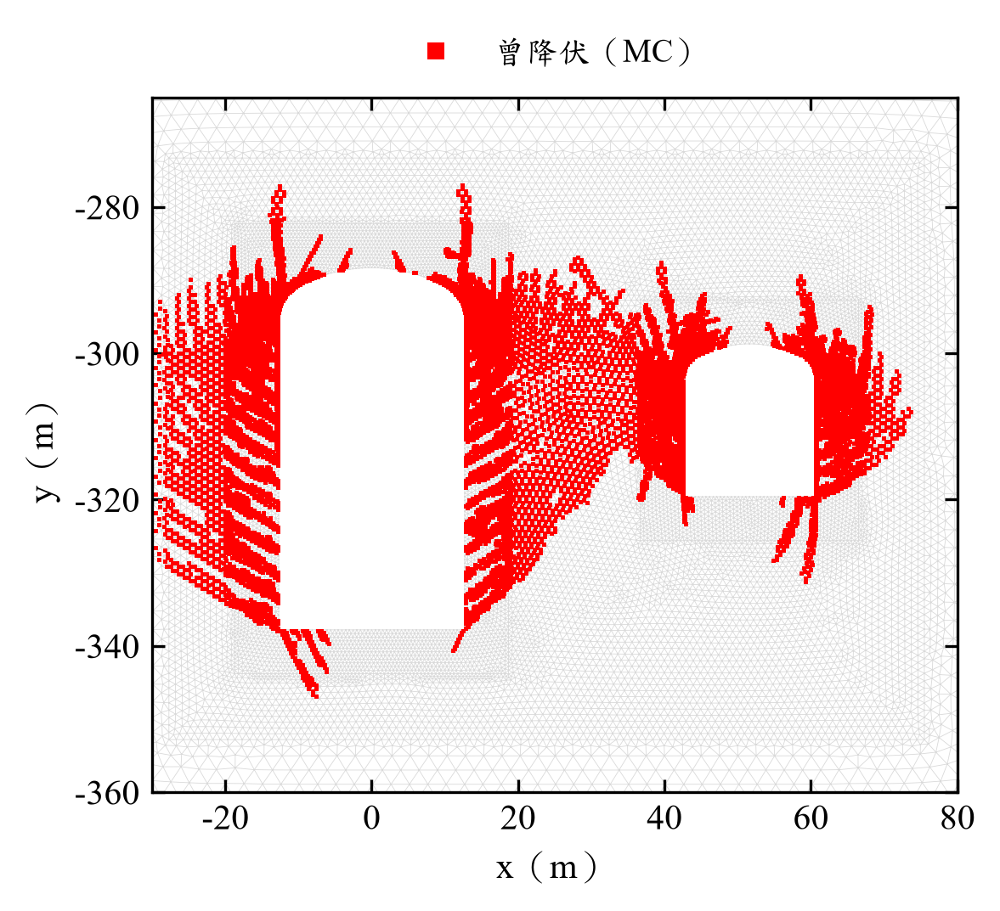

Post-Processing
不開 PLAXIS Output，直接用 Python 從 data.db 取出位移、應力與收斂資訊，再畫成可以放進報告的圖。前半段講讀取（連線、BLOB 解碼、共用開頭），後半段講作圖（規範、逐階曲線、收斂歷程、雲圖、塑性範圍）。
怎麼用 Python 把 data.db 裡的結果變成 numpy 陣列？怎麼畫出格式一致、可以直接插進 Word 的圖？
準備環境
需要 Python 3、sqlite3（Python 內建）和 numpy。畫圖再加 matplotlib；想用表格方式整理結果可以裝 pandas。
python -m pip install numpy matplotlib pandasdata.db 是 PLAXIS 的專案檔本體，改壞了模型就打不開。連線時一律用 file:...?mode=ro 唯讀模式，也不要在 PLAXIS 開著這個專案時寫入它。
本章範例都以 e5_TC289_NearMesh（光明地下廠房 plan_e，17 階開挖、無支撐）為例；下方的「執行結果」與圖，都是產生網頁時實際執行範例程式得到的。
連線與查詢
Python 的 sqlite3 和 SQL 查詢一模一樣，差別只是結果會變成 Python 的 list。? 是參數位置，值放在後面的 tuple，不要用字串拼接。
rows = con.execute('''SELECT Number, Name FROM I_Phase
WHERE PhaseTypeID = ? ORDER BY Number LIMIT 4''', (1,)).fetchall()
for number, name in rows:
print(number, name)
# 只要一個值：fetchone()[0]
n = con.execute('SELECT COUNT(*) FROM Result').fetchone()[0]
print('Result 共', n, '筆')0 Ph0_地應力平衡 [InitialPhase]
1 L01_主廠房頂拱中央導坑 [Phase_1]
2 L02_主廠房頂拱兩側擴挖 [Phase_2]
3 L03_主廠房台階至EL906.6 [Phase_3]
Result 共 5687299 筆想用表格方式看，pandas 可以直接把查詢結果變成 DataFrame：
import pandas as pd
df = pd.read_sql('SELECT ID, Name, ComponentCount FROM MeshEntity WHERE MeshComponentTypeID = 3 LIMIT 5', con)
print(df.to_string(index=False)) ID Name ComponentCount
335 BoreholePolygon_1_Polygon_1_Polygon_2_Polygon_3_Polygon_5_1 401
336 BoreholePolygon_1_Polygon_1_Polygon_2_Polygon_3_Polygon_7_1 316
337 BoreholePolygon_1_Polygon_1_Polygon_2_Polygon_3_Polygon_6_1 318
338 BoreholePolygon_1_Polygon_1_Polygon_2_Polygon_3_Polygon_8_1 592
339 BoreholePolygon_1_Polygon_1_Polygon_2_Polygon_3_Polygon_9_1 514BLOB 解碼原理
BLOB 是一串位元組（bytes）。要把它變回數字，只需要知道兩件事：每個數字幾個 bytes、用什麼格式。這兩件事寫在每一列的 DataInterpretationID（見 DataInterpretation）。
手動解一個數字
Mesh.NodeData 開頭 8 bytes 是 cdcccccccccc1040。位元組倒過來讀是 4010cccccccccccd，照 IEEE 754 Double 規則就是 4.2：
import struct
raw = con.execute('SELECT NodeData FROM Mesh').fetchone()[0]
first8 = raw[:8]
print(first8.hex()) # 原始位元組
print(struct.unpack('<d', first8)[0]) # '<' = little-endian，'d' = Doublecdcccccccccc1040
4.2一次解整串：numpy.frombuffer
struct 適合解幾個數字；整串幾十萬個數字用 np.frombuffer，速度快很多，而且直接得到陣列。
raw = con.execute('SELECT NodeData FROM Mesh').fetchone()[0]
xy = np.frombuffer(raw, dtype='<f8') # '<f8' = little-endian 8-byte float = Double
print(len(raw), 'bytes →', xy.size, '個 Double')
xy = xy.reshape(-1, 2) # 每 2 個一組：(x, y)
print(xy[:3])6500496 bytes → 812562 個 Double
[[ 4.2 -288.7198 ]
[ 4.2 -289.12813929]
[ 4.2 -289.54641594]]| DataInterpretation | bytes | numpy dtype | 這個資料庫裡出現在 |
|---|---|---|---|
| Double | 8 | <f8 | 位移、應力、座標，大部分結果 |
| Float | 4 | <f4 | GlobalResult 中間步的整體數值 |
| SignedInt32 | 4 | <i4 | 塑性點旗標、疊代次數 |
| UnsignedInt64 | 8 | <u8 | 節點編號、Global Step Number |
| Boolean | 1 | <u1 | 材料與階段設定的開關 |
| …TableId | 8 | <i8 | 指向另一張表的 ID（列舉值） |
GlobalResult 的 SumMStage 在中間步存成 4 bytes 的 Float，在最後一步存成 8 bytes 的 Double。所以不能寫死 <f8，每一列都要照它自己的 DataInterpretationID 解碼。下面共用開頭的 decode() 就是做這件事。
共用開頭
把下面這段存成 plx_common.py（已經放在 files/plx_common.py），自己的程式寫 from plx_common import * 就能使用。網站上其他所有 Python 範例，都是接在這段後面執行的。
import sqlite3
import numpy as np
DB = r'E:\01地下電廠洞室開挖支撐設計分析\KuanMing_Plaxis2D\KuanMing_plan_e\e5_TC289_NearMesh\e5_TC289_NearMesh.p2dxdat\data.db'
con = sqlite3.connect(f'file:{DB}?mode=ro', uri=True) # 唯讀開啟，不會改到檔案
# DataInterpretation.ID → numpy 的資料型別（< 代表 little-endian，位元組倒過來存）
DTYPE = {1: '<f4', 2: '<f8', 3: '<u1', 4: '<i1', 5: '<u2', 6: '<i2', 7: '<u4', 8: '<i4',
9: '<u8', 10: '<i8', 11: '<u1', 12: 'S1', 13: '<u1',
14: '<i8', 15: '<i8', 16: '<i8', 17: '<i8', 18: '<i8'}
def decode(data, interp_id, size=1):
"""把 BLOB 依 DataInterpretationID 轉成 numpy 陣列；size = ComponentSize（每點幾個分量）"""
if data is None:
return None
a = np.frombuffer(data, DTYPE[interp_id])
return a.reshape(-1, size) if size > 1 else a
# DataLayout.ID：結果數值排在哪裡
NODAL, INTEGRATION_POINT, MESH_ENTITY, ELEMENT, UNIQUE_NODAL = 1, 2, 3, 4, 5
def last_step(phase_number):
"""施工階段（I_Phase.Number）最後一個計算步的 K_Steps.ID；完整結果只存在這一步"""
return con.execute("""SELECT k.ID FROM K_Steps k JOIN I_Phase p ON p.ID = k.I_PhaseID
WHERE p.Number = ? AND p.PhaseTypeID = 1
ORDER BY k.Number DESC LIMIT 1""", (phase_number,)).fetchone()[0]
def get_result(step_id, entity_id, var_name, layout_id):
"""讀一筆 Result 並解碼；這一步沒有存這個量就回傳 None"""
row = con.execute("""SELECT r.Data, r.DataInterpretationID, r.ComponentSize
FROM Result r JOIN Variables v ON v.ID = r.VariablesID
WHERE r.K_StepsID = ? AND r.MeshEntityID = ? AND v.Name = ?
AND r.DataLayoutID = ?""",
(step_id, entity_id, var_name, layout_id)).fetchone()
return None if row is None else decode(*row)
def connectivity(entity_id):
"""MeshEntity.ComponentData → 每列一個元素的節點編號（節點編號從 1 起算）"""
count, data = con.execute('SELECT ComponentCount, ComponentData FROM MeshEntity WHERE ID = ?',
(entity_id,)).fetchone()
return np.frombuffer(data, '<u8').reshape(count, -1)
def unique_nodes(conn):
"""Unique Nodal 結果的節點順序 = 節點在連接表裡第一次出現的順序"""
flat = conn.ravel()
_, first = np.unique(flat, return_index=True)
return flat[np.sort(first)]
def node_xy():
"""全部節點座標 (N, 2)；節點編號 n 的座標是 node_xy()[n - 1]"""
data = con.execute('SELECT NodeData FROM Mesh').fetchone()[0]
return np.frombuffer(data, '<f8').reshape(-1, 2)| 名稱 | 做什麼 | 詳見 |
|---|---|---|
con | 唯讀連線 | 4.2 |
decode(data, interp_id, size) | BLOB → numpy 陣列；size > 1 時每列一個點 | 4.3、DataInterpretation |
NODAL … UNIQUE_NODAL | DataLayout 的編號 | DataLayout |
last_step(n) | 第 n 個施工階段的最後一步（K_Steps.ID） | K_Steps |
get_result(step, entity, name, layout) | 讀一筆結果並解碼 | Result |
connectivity(entity) | 某個網格區塊的元素連接（節點編號，1 起算） | MeshEntity |
unique_nodes(conn) | Unique Nodal 結果每一列對應的節點編號 | Result |
node_xy() | 全部節點座標 | Mesh |
讀一個結果的四步驟
以「L10 結束時，所有岩體區塊的位移」為例，照第 3 章的四個編號依序找：
# 1. 哪一步：L10 是 I_Phase.Number = 10
step = last_step(10)
# 2. 哪些網格區塊：這一步還存在、有存位移的岩體區塊（三角形元素群）
ents = [e for (e,) in con.execute('''SELECT ID FROM MeshEntity
WHERE MeshComponentTypeID = 3 AND MeshEntityApplicationID = 1''')]
# 3 + 4. 哪一種量、排在哪裡：Displacement、Unique Nodal
umax, where = 0, None
for e in ents:
u = get_result(step, e, 'Displacement', UNIQUE_NODAL)
if u is None: # 已經挖掉的區塊沒有結果
continue
ids = unique_nodes(connectivity(e))
utot = np.hypot(u[:, 0], u[:, 1])
k = utot.argmax()
if utot[k] > umax:
umax, where = utot[k], (e, ids[k])
xy = node_xy()
print('K_Steps.ID =', step)
print(f'最大總位移 {umax*1000:.1f} mm，在區塊 {where[0]} 的節點 {where[1]}，座標 {xy[where[1]-1].round(2)}')K_Steps.ID = 826
最大總位移 20.3 mm，在區塊 358 的節點 190511，座標 [ -0. -315.]同樣的四步驟，一次跑完所有階段
把上面包進迴圈，就能批次檢查每個階段：最大位移、99.9 百分位數、位移超過 0.1 m 的節點數。這是直接讀 data.db 最划算的地方，在 Output 裡要一個階段一個階段點。
ents = [e for (e,) in con.execute('SELECT ID FROM MeshEntity WHERE MeshComponentTypeID = 3 AND MeshEntityApplicationID = 1')]
xy = node_xy()
print('階段 最大總位移(mm) 99.9百分位(mm) >0.1m節點數 最大值位置 (x, y)')
for n in range(1, 18):
step = last_step(n)
best, allu = (0, None), []
for e in ents:
u = get_result(step, e, 'Displacement', UNIQUE_NODAL)
if u is None:
continue
ut = np.hypot(u[:, 0], u[:, 1])
allu.append(ut)
k = ut.argmax()
if ut[k] > best[0]:
best = (ut[k], unique_nodes(connectivity(e))[k])
allu = np.concatenate(allu)
x, y = xy[best[1] - 1]
print(f'L{n:02d} {best[0]*1000:14.1f} {np.percentile(allu, 99.9)*1000:14.1f} {(allu > 0.1).sum():11d} ({x:6.2f}, {y:8.2f})')階段 最大總位移(mm) 99.9百分位(mm) >0.1m節點數 最大值位置 (x, y)
L01 5.5 5.0 0 ( 0.00, -293.80)
L02 14.4 13.9 0 ( -0.12, -293.80)
L03 15.0 14.6 0 ( -0.00, -296.40)
L04 15.7 15.3 0 ( -0.00, -298.90)
L05 16.4 15.9 0 ( -0.00, -301.40)
L06 17.1 16.7 0 ( -0.00, -303.90)
L07 17.9 17.6 0 ( -0.00, -307.00)
L08 18.8 18.5 0 ( -0.00, -309.50)
L09 19.5 19.2 0 ( -0.00, -312.00)
L10 20.3 20.0 0 ( -0.00, -315.00)
L11 11085.5 21.7 29 ( 12.66, -294.77)
L12 11086.7 24.0 29 ( 12.66, -294.77)
L13 11089.2 28.6 30 ( 12.66, -294.77)
L14 11093.7 35.8 30 ( 12.66, -294.77)
L15 11097.3 42.3 30 ( 12.66, -294.77)
L16 11099.9 47.0 30 ( 12.66, -294.77)
L17 214509.1 50.2 57 ( 12.70, -337.18)L01～L10 的最大位移在 5～20 mm，合理。L11 起，主廠房右拱腳附近（x ≈ 12.7 m）約 30 個節點的位移達 11 m，L17 右牆腳再多出一群，最大到 214 m；但 99.9 百分位數仍只有 20～50 mm，表示是少數節點的局部數值問題，不是整體行為。畫圖或取最大值前要先排除這些點（4.9）。
作圖規範：fig_style.py
報告裡的每一張圖用同一套格式，放進 Word 之後字級才會一致。規範寫成一個小模組 files/fig_style.py，每支畫圖程式開頭 S.apply()、每個座標軸呼叫 S.frame(ax)：
"""結案報告所有圖共用的格式（以圖 4-4 C_kaf 掃描的樣式為準）。
- 圖寬 = 插入 Word 的寬度（width_in(cm)），以 1:1 繪製，各圖的字級才會一致。
- 字型 Times New Roman ＋ 標楷體；座標軸數字與標籤 10 pt、圖例 9 pt。
- 顏色依序使用 黑 → 藍 → 紅（COLORS），第四種以後用灰色；實測一律黑色、OpenSees 藍色、PLAXIS 紅色；
三案 RPI_A 黑、RPI_B 藍、UCD_6 紅。
- 四邊框線、刻度朝內、上右兩側也有刻度；不畫格線；圖例無外框。
- 中文字串裡不要用 $…$（mathtext 沒有中文字型），下標直接寫 hp0、σ′v0、ru。
用法：import fig_style as S; S.apply(); fig, ax = plt.subplots(figsize=(S.width_in(11), 3.0)); S.frame(ax)
"""
import matplotlib as mpl
BLACK, BLUE, RED, GRAY, LIGHT = "#000000", "#1F5FA8", "#C0392B", "#8C8C8C", "#D9D9D9"
COLORS = [BLACK, BLUE, RED, GRAY]
CASE_COLOR = {"RPI_A": BLACK, "RPI_B": BLUE, "UCD_6": RED}
SRC_COLOR = {"meas": BLACK, "ops": BLUE, "plx": RED}
FS, FS_LEGEND = 10, 9
def width_in(cm):
return cm / 2.54
def apply():
mpl.rcParams.update({
"font.family": ["Times New Roman", "DFKai-SB"], "mathtext.fontset": "stix",
"axes.unicode_minus": False, "font.size": FS, "axes.labelsize": FS, "axes.titlesize": FS,
"xtick.labelsize": FS, "ytick.labelsize": FS, "legend.fontsize": FS_LEGEND,
"axes.linewidth": 0.8, "axes.edgecolor": BLACK, "text.color": BLACK, "axes.labelcolor": BLACK,
"xtick.color": BLACK, "ytick.color": BLACK, "xtick.direction": "in", "ytick.direction": "in",
"xtick.top": True, "ytick.right": True, "axes.grid": False,
"axes.prop_cycle": mpl.cycler(color=COLORS),
"lines.linewidth": 1.0, "lines.markersize": 4.5,
"legend.frameon": False, "savefig.dpi": 300, "savefig.facecolor": "white",
"image.cmap": "Blues",
})
def frame(ax):
for s in ax.spines.values():
s.set_color(BLACK)
s.set_linewidth(0.8)
ax.grid(False)
ax.tick_params(top=True, right=True, direction="in")| 項目 | 規則 | 理由 |
|---|---|---|
| 圖寬 | figsize=(S.width_in(16), …)：圖寬＝插入 Word 的寬度（cm），以同寬插入 | 1:1 插入，10 pt 的字在 Word 裡就是 10 pt |
| 字型 | Times New Roman＋標楷體；座標軸 10 pt、圖例 9 pt | 與報告內文一致 |
| 線條顏色 | 黑 → 藍 → 紅，第四條起用灰 | 黑白列印仍可分辨；少用顏色 |
| 實測 vs 模擬 | 實測：黑色虛線＋空心標記；模擬：藍色實線＋實心標記 | 一眼分出資料來源 |
| 框與刻度 | 四邊框 0.8 pt、刻度朝內、上右也有刻度；不畫格線 | 期刊常見格式 |
| 圖例 | 無外框；不可壓到曲線，改放圖頂或獨立一格 | 避免遮住資料 |
| 等值圖色階 | 總位移 turbo、主應力 jet、塑性點紅色 | 場量用彩色色階較易判讀（曲線圖仍用黑藍紅） |
| 中文與符號 | 含中文的字串不要用 $…$；下標直接寫 σ′v0、hp0 | mathtext 沒有中文字型，會變方框 |
逐階曲線：量測點的相對位移
第 2 章在拱頂、底板、側牆建了量測點。每一階的最後一步讀出全部節點位移，再取離量測點最近的節點相減，就得到工程上最常看的四條曲線。先寫兩個小函式：
import matplotlib
matplotlib.use('Agg')
import matplotlib.pyplot as plt
import fig_style as S # files/fig_style.py，放在自己的程式旁邊
S.apply()
XY = node_xy()
ENTS = [e for (e,) in con.execute('''SELECT ID FROM MeshEntity
WHERE MeshComponentTypeID = 3 AND MeshEntityApplicationID = 1''')]
def disp_field(step):
'''這一步全部節點的位移 (N, 2)，單位 m；已挖除、沒有結果的節點是 NaN'''
u = np.full((len(XY), 2), np.nan)
for e in ENTS:
d = get_result(step, e, 'Displacement', UNIQUE_NODAL)
if d is not None:
u[unique_nodes(connectivity(e)) - 1] = d
return u
# 量測點：與第 2 章 point 指令相同的座標
PTS = {'CROWN': (0, -288.3), 'CROWN_REF': (0, -263.3), 'FLOOR': (0, -337.8), 'FLOOR_REF': (0, -362.8),
'WALL_L': (-12.7, -316.6), 'WALL_R': (12.7, -316.6), 'TR_L': (42.7, -309.2), 'TR_R': (60.5, -309.2)}
NODE = {k: int(np.argmin(np.hypot(XY[:, 0] - x, XY[:, 1] - y))) for k, (x, y) in PTS.items()} # 0 起算
for k, i in NODE.items():
print(f'{k:9s} 節點 {i + 1:6d} 離量測點 {np.hypot(*(XY[i] - PTS[k])):.4f} m')CROWN 節點 50 離量測點 0.0000 m
CROWN_REF 節點 10099 離量測點 0.0000 m
FLOOR 節點 6056 離量測點 0.0000 m
FLOOR_REF 節點 10029 離量測點 0.0000 m
WALL_L 節點 5989 離量測點 0.0000 m
WALL_R 節點 6123 離量測點 0.0000 m
TR_L 節點 2791 離量測點 0.0000 m
TR_R 節點 2753 離量測點 0.0000 m因為量測點在建模時就是幾何點，最近節點的距離是 0。接著跑完 17 階：
rows = []
for n in range(1, 18):
u = disp_field(last_step(n)) * 1000 # mm
ux = lambda k: u[NODE[k], 0]
uy = lambda k: u[NODE[k], 1]
rows.append((n,
-(uy('CROWN') - uy('CROWN_REF')), # 拱頂相對沉陷（向下為正）
uy('FLOOR') - uy('FLOOR_REF'), # 底板相對隆起
ux('WALL_L') - ux('WALL_R'), # 主廠房收斂（兩牆相向為正）
ux('TR_L') - ux('TR_R'))) # 主變室收斂
RES = np.array(rows)
print('階段 拱頂沉陷 底板隆起 主廠房收斂 主變室收斂 (mm)')
for r in RES:
print(f'L{int(r[0]):02d} {r[1]:8.1f} {r[2]:8.1f} {r[3]:10.1f} {r[4]:10.1f}')階段 拱頂沉陷 底板隆起 主廠房收斂 主變室收斂 (mm)
L01 4.1 0.2 0.4 -0.0
L02 7.4 1.3 1.8 -0.0
L03 7.6 1.6 2.1 -0.0
L04 7.8 1.9 2.4 -0.0
L05 7.9 2.1 2.6 0.6
L06 8.0 2.4 2.8 0.6
L07 8.2 2.9 2.9 0.7
L08 8.3 3.3 2.7 0.7
L09 8.4 3.8 2.2 0.7
L10 8.4 4.4 1.1 0.7
L11 8.4 5.1 15.8 1.0
L12 8.4 5.9 26.9 0.6
L13 8.5 6.7 37.6 1.6
L14 8.5 7.8 51.1 22.0
L15 8.5 9.0 62.9 37.1
L16 8.6 10.0 71.6 48.5
L17 8.7 11.1 78.3 55.6fig, ax = plt.subplots(figsize=(S.width_in(16), S.width_in(7)))
S.frame(ax)
labels = ['拱頂相對沉陷', '底板相對隆起', '主廠房收斂', '主變室收斂']
for j, (lab, mk) in enumerate(zip(labels, 'os^D')):
ax.plot(RES[:, 0], RES[:, j + 1], '-', marker=mk, label=lab) # 模擬：實線＋實心標記，顏色依黑藍紅灰
ax.set_xlabel('施工階段')
ax.set_ylabel('相對位移（mm）')
ax.set_xticks(range(1, 18))
ax.set_xticklabels([f'L{n:02d}' for n in range(1, 18)], rotation=90)
ax.set_xlim(0.5, 17.5)
ax.set_ylim(bottom=0)
ax.legend(loc='lower center', bbox_to_anchor=(0.5, 1.0), ncol=4) # 圖例置頂，不壓到曲線
fig.savefig('ch4/curve_phases.png', bbox_inches='tight')
plt.close(fig)
拱頂沉陷在頭兩階（導坑、擴挖）就幾乎到位；兩牆收斂則要等開挖面通過量測點高程才明顯增加：主廠房 EL.886.4 在 L11 被挖過、主變室 EL.893.8 在 L13–L14 被挖過。
收斂歷程：GlobalResult
GlobalResult 每一個計算步都有存，所以不開 Output 也能畫出 ΣMstage–步數、CSP–步數，檢查一個相位是怎麼算完（或算不完）的。
def global_series(phase_number, var):
'''某一相每一步的整體量，回傳 (步號, 數值)'''
rows = con.execute('''SELECT k.Number, g.Data, g.DataInterpretationID, g.ComponentSize
FROM GlobalResult g
JOIN K_Steps k ON k.ID = g.K_StepsID
JOIN I_Phase p ON p.ID = k.I_PhaseID
JOIN Variables v ON v.ID = g.VariablesID
WHERE p.Number = ? AND p.PhaseTypeID = 1 AND v.Name = ?
ORDER BY k.Number''', (phase_number, var)).fetchall()
step = np.array([r[0] for r in rows])
val = np.array([decode(d, i, s).ravel()[0] for _, d, i, s in rows], dtype=float)
return step, val
nsteps = {n: len(global_series(n, 'SumMStage')[0]) for n in range(1, 18)}
print('每相步數：', nsteps)
PH = max(nsteps, key=nsteps.get)
print('步數最多的相位：L%02d' % PH)每相步數： {1: 36, 2: 146, 3: 40, 4: 74, 5: 55, 6: 76, 7: 98, 8: 96, 9: 103, 10: 89, 11: 302, 12: 289, 13: 343, 14: 600, 15: 585, 16: 521, 17: 383}
步數最多的相位：L14st, msum = global_series(PH, 'SumMStage')
_, csp = global_series(PH, 'CSP')
_, nit = global_series(PH, 'Number of Iterations')
fig, axs = plt.subplots(3, 1, figsize=(S.width_in(16), S.width_in(12)), sharex=True)
for ax in axs:
S.frame(ax)
axs[0].plot(st, msum, '-', color=S.BLACK)
axs[0].set_ylabel('ΣMstage')
axs[0].set_ylim(0, 1.05)
axs[1].plot(st, csp, '-', color=S.BLUE)
axs[1].set_ylabel('CSP')
axs[2].plot(st, nit, '-', color=S.RED)
axs[2].set_ylabel('迭代次數')
axs[2].set_xlabel(f'L{PH:02d} 的計算步')
fig.align_ylabels(axs)
fig.savefig('ch4/global_history.png', bbox_inches='tight')
plt.close(fig)
print(f'L{PH:02d}：{len(st)} 步，ΣMstage 最後 {msum[-1]:.3f}，CSP 最小 {csp.min():.3f}，迭代次數最多 {int(nit.max())}')L14：600 步，ΣMstage 最後 1.000，CSP 最小 -0.006，迭代次數最多 60
ΣMstage 每一步往上走一點，走到 1.0 這一相才算完成。CSP 往下掉表示塑性區擴大、整體勁度變小；迭代次數多的那幾步，就是塑性區在擴展、自動步長被縮小的地方。CSP 與步長控制的原理見第 1 章。
雲圖：總位移與位移向量
收集每個節點的位移，取元素的三個角點組成三角網格，用 tricontourf 畫等值圖；位移向量先內插到規則網格再畫，箭頭才不會擠成一團。色階上限取 99.9 百分位數，避免少數發散節點吃掉整張圖的顏色。
import matplotlib.tri as mtri
def active_tris(step):
'''這一步還存在的三角形（3 個角點，0 起算）'''
tris = []
for e in ENTS:
if get_result(step, e, 'Displacement', UNIQUE_NODAL) is not None:
tris.append(connectivity(e)[:, :3] - 1) # 15 節點三角形的前 3 個是角點
return np.vstack(tris)
n = 17
step = last_step(n)
u = disp_field(step)
ut = np.hypot(u[:, 0], u[:, 1]) * 1000 # mm
tri = mtri.Triangulation(XY[:, 0], XY[:, 1], active_tris(step))
vmax = np.ceil(np.nanpercentile(ut, 99.9) / 5) * 5 # 色階上限：99.9 百分位數取整到 5 mm，排除發散節點
fig, ax = plt.subplots(figsize=(S.width_in(16), S.width_in(9)))
S.frame(ax)
cs = ax.tricontourf(tri, np.nan_to_num(ut), levels=np.linspace(0, vmax, 21), cmap='turbo', extend='max')
cb = fig.colorbar(cs, ax=ax, pad=0.02, ticks=np.arange(0, vmax + 1, 10))
cb.set_label('總位移 |u|（mm）')
# 位移向量：內插到 4 m 間距的規則網格
gx, gy = np.meshgrid(np.arange(-30, 81, 4.0), np.arange(-360, -264, 4.0))
fx = mtri.LinearTriInterpolator(tri, np.nan_to_num(u[:, 0]))(gx, gy)
fy = mtri.LinearTriInterpolator(tri, np.nan_to_num(u[:, 1]))(gx, gy)
ax.quiver(gx, gy, fx, fy, color='white', scale=0.6, width=0.0025)
ax.set_xlim(-30, 80); ax.set_ylim(-360, -265); ax.set_aspect('equal')
ax.set_xlabel('x（m）'); ax.set_ylabel('y（m）')
fig.savefig('ch4/contour_L17.png', bbox_inches='tight')
plt.close(fig)
print(f'L{n}：三角形 {tri.triangles.shape[0]:,} 個；|u| 99.9 百分位 {np.nanpercentile(ut, 99.9):.1f} mm；最大 {np.nanmax(ut):.0f} mm（發散節點）')L17：三角形 38,440 個；|u| 99.9 百分位 50.2 mm；最大 214509 mm（發散節點）
要比較不同相位，把 levels 固定成同一組（例如 0～60 mm），不要每張圖各自取上限，否則顏色無法互相比較。
塑性範圍：哪裡曾經降伏
Plastic MC History 是每個積分點的歷程旗標（int32，每個三角形 12 個）：曾經到達 MC 降伏面就不為 0，之後卸載也不會歸零，適合用來畫「曾降伏範圍」。data.db 沒有存積分點座標，這裡用元素形心代表整個元素：只要 12 個點中有一個降伏就標紅。
def plastic_elements(step, var='Plastic MC History'):
'''回傳 (形心 x, y, 是否曾降伏)；整塊都相同時 BLOB 只存 1 個值'''
cx, cy, flag = [], [], []
for e in ENTS:
d = get_result(step, e, var, INTEGRATION_POINT)
if d is None:
continue
conn = connectivity(e)
f = np.broadcast_to(d, (len(conn) * 12,)) if d.size == 1 else d
flag.append((f.reshape(-1, 12) != 0).any(axis=1))
c = XY[conn[:, :3] - 1].mean(axis=1)
cx.append(c[:, 0]); cy.append(c[:, 1])
return np.concatenate(cx), np.concatenate(cy), np.concatenate(flag)
px, py_, pf = plastic_elements(step)
fig, ax = plt.subplots(figsize=(S.width_in(16), S.width_in(9)))
S.frame(ax)
ax.triplot(tri, color=S.LIGHT, lw=0.2) # 淺灰：還存在的網格
ax.plot(px[pf], py_[pf], 's', color='r', ms=1.2, mec='none', label='曾降伏（MC）')
ax.set_xlim(-30, 80); ax.set_ylim(-360, -265); ax.set_aspect('equal')
ax.set_xlabel('x（m）'); ax.set_ylabel('y（m）')
ax.legend(loc='lower center', bbox_to_anchor=(0.5, 1.0), markerscale=4)
fig.savefig('ch4/plastic_L17.png', bbox_inches='tight')
plt.close(fig)
print(f'L17：元素 {pf.size:,} 個，曾降伏 {pf.sum():,} 個（{pf.mean() * 100:.1f} %）')L17：元素 38,440 個，曾降伏 9,000 個（23.4 %）
PLAXIS 沒有公開塑性旗標的代碼表。Plastic Point Information 是「這一步」的狀態（1 MC、2 張力截斷…為推定），Plastic MC History、Plastic Tension History 是歷程。第一次使用時，挑一個相位和 Output 的 Plastic points 圖對照一次。
匯出成表格
報告的表格、和其他程式（例如 OpenSees 結果）的比較，最方便的格式是 CSV。用 pandas 加上欄名後輸出；編碼用 utf-8-sig，Excel 直接開中文才不會亂碼。
import pandas as pd
df = pd.DataFrame(RES[:, 1:], columns=['拱頂相對沉陷_mm', '底板相對隆起_mm', '主廠房收斂_mm', '主變室收斂_mm'],
index=[f'L{n:02d}' for n in range(1, 18)]).round(2)
df.index.name = '階段'
df.to_csv('ch4/phases.csv', encoding='utf-8-sig')
print(df.tail(5).to_string()) 拱頂相對沉陷_mm 底板相對隆起_mm 主廠房收斂_mm 主變室收斂_mm
階段
L13 8.45 6.73 37.62 1.59
L14 8.45 7.83 51.11 22.00
L15 8.51 9.02 62.85 37.05
L16 8.58 10.03 71.55 48.53
L17 8.69 11.12 78.33 55.58常見錯誤與效能
- 節點座標錯位忘了節點編號從 1 起算，用
xy[n]而不是xy[n - 1]，結果每個點都偏到隔壁節點。 - 位移對錯節點Unique Nodal 的順序不是節點編號由小到大，而是連接表中第一次出現的順序。用
np.unique(conn)排序會錯配（實測相鄰區塊共用節點差到 2.6 mm）。 - 查詢很慢Result 有 568 萬列。WHERE 一定要先給
K_StepsID（有索引 K_StepsID, MeshEntityID, VariablesID）。只用變數名稱查，會掃過整張 3 GB 的表。 - buffer size must be a multiple用錯 dtype，例如把 4 bytes 的 Float 當 8 bytes 的 Double 解。改用
decode(data, DataInterpretationID)。 - 中間步找不到結果中間步只存曲線點的小區塊，整個區塊的結果只在每個階段最後一步。
- 跨相位比較應力被停用的元素在後續相位不輸出，積分點的順序會變；比較應力要依座標配對，不能照順序相減。
- 圖上的中文變方框含中文的字串用了
$…$，或沒有先S.apply()設定標楷體。 - 中文路徑路徑含空白、中文沒問題，但連線字串要用
file:{路徑}?mode=ro加uri=True。